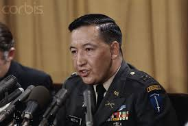
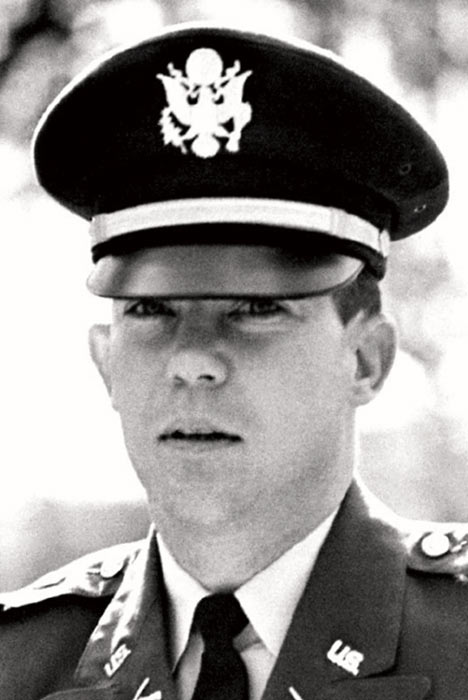
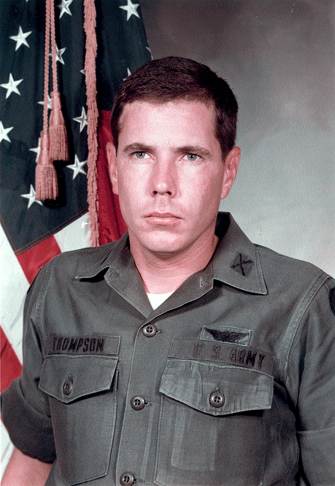
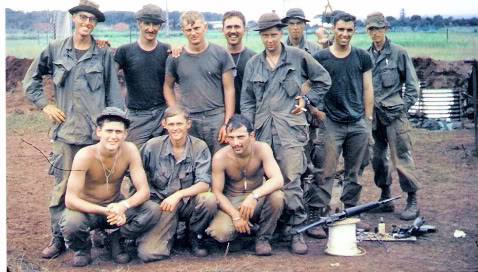

As for every situation, there are typically three kinds of people: those who lead, those who follow, and those who get out of the way. Medina, Calley, and Thompson led their own groups in this situation. The soldiers in Charlie Company either followed the orders issued to them or chose to ignore them and get out of the way.
Cpt Ernest Medina and Lt William Calley both experienced a “power trip,” which corrupted their mindsets and allowed them both to lead their own parts of the attack on My Lai. This is similar to the Stanford Prison experiment, where some of the guards abused their power to see how far they could take it without repercussions.
WO Hugh Thompson saw the dangers that came with obeying orders like the ones issued by Medina and Calley. As the Milgram experiment proved, ordinary people who do not feel the direct responsibility of the situation are capable of committing immoral acts that they otherwise would not do. Therefore, in situations like My Lai, it is moral to disobey.
Most members of Charlie Company either followed the orders given to them without question or did not feel comfortable opposing their authorities. Opposing a direct order from their superiors in a wartime combat situation could’ve resulted in either being shot or completely separating themselves from the situation and assuming their part of the responsibility for what was going on, which relates back to the Milgram experiment. They followed a group mindset similar to the Nazi regime, which at that time was to destroy My Lai. Those who did step out of line just walked away from the situation and did not attempt to resist the rest of Charlie Company. Some soldiers recalled that that they wished there was something they could’ve done to stop it. Whereas logically it seems as though the situation should’ve been stopped, the soldier’s position in that situation did not allow them to step up and halt it, mainly due to the military’s chain of command.